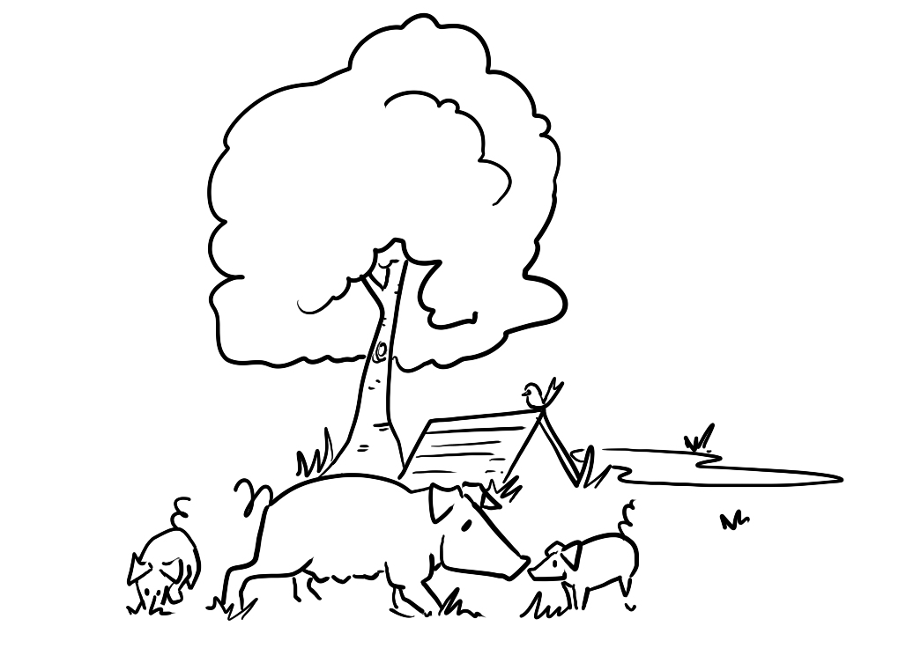
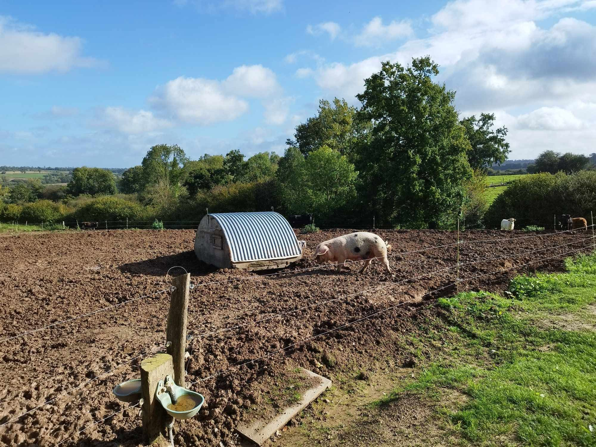
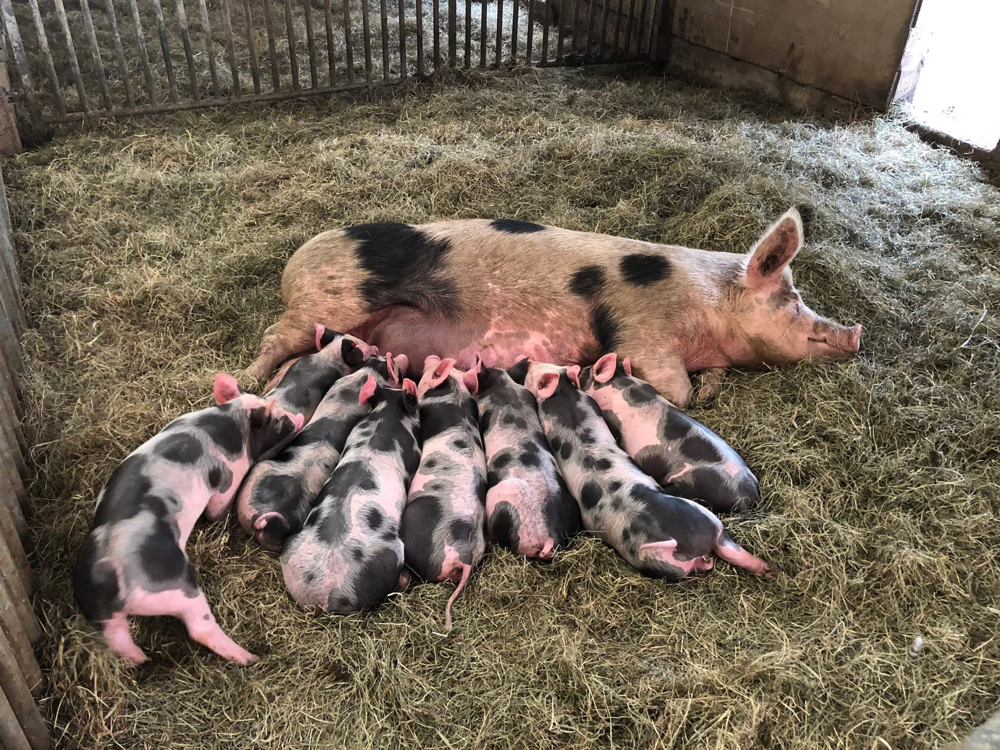

Une valorisation vertueuse : le petit-lait 🧀
La mission principale de nos cochons est de transformer un coproduit de notre fromagerie en une viande savoureuse. Lors de la fabrication du fromage, il faut environ 10 litres de lait pour obtenir 1 kg de fromage, ce qui signifie que près de 90 % de ce volume se retrouve dans le petit-lait (ou lactosérum).
Cet élevage porcin nous permet de valoriser ce coproduit, d'élargir la gamme de produits proposés et de renforcer l'attractivité de la ferme pour les consommateurs.
Un élevage en plein air et respectueux 🐖
Nos cochons sont élevés sur une litière de paille confortable et disposent d'un parcours extérieur. Cela leur permet de profiter de l'air libre, du soleil, et d'exprimer un comportement essentiel à leur bien-être : fouiller le sol avec leur groin.
Leur alimentation s'inscrit dans une boucle locale : elle se compose du petit-lait issu de la fromagerie, du son de blé issu de la meunerie et de céréales locales.
Une production artisanale et mesurée 📏
Au début, l'élevage de porcs sera marginal, car le nombre de porcs dépendra directement de la quantité de petit-lait à valoriser Nous élèverons entre 10 et 15 porcs par an.
Si la demande est au rendez-vous, nous pourrons augmenter progressivement la production, tout en conservant une dimension artisanale et à taille humaine. Il est en effet essentiel pour nous de respecter le bien-être de nos animaux, notre voisinage et notre environnement.

